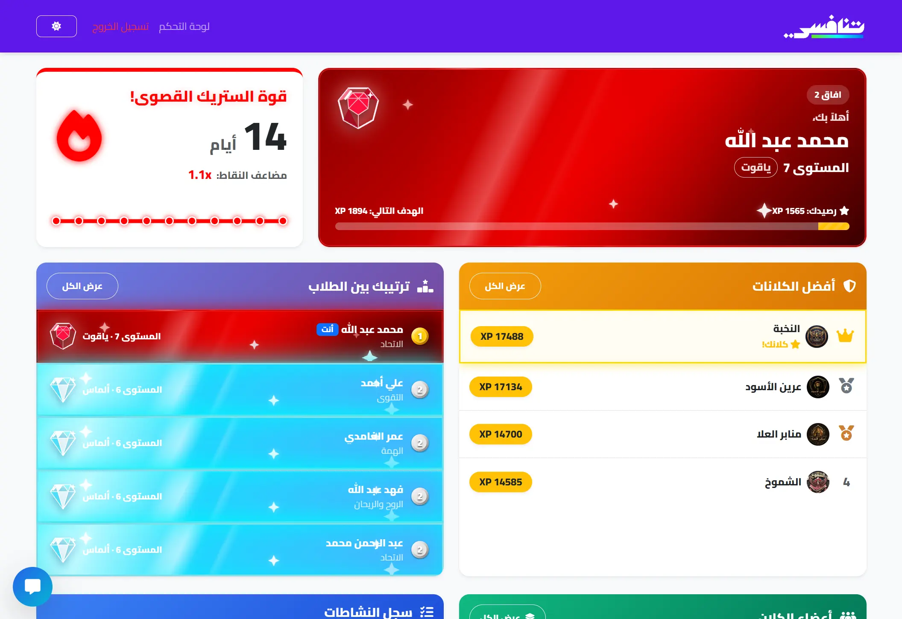

تنافسي: من تجربة تحفيزية قصيرة إلى نظام تقدم يمتلكه الطالب
نموذج أولي صممته وبنيته لاختبار كيف تتحول فرضية سلوكية إلى تجربة قابلة للاستخدام والقياس داخل برنامج صيفي مدته أربعة أسابيع.

كيف نبدأ المشاركة عندما تكون مدة التجربة قصيرة جدًا؟
لم يكن التحدي اضافة نقاط وشارات، بل تصميم نظام يجعل الرصد اليومي والتقدم الفردي والانتماء للفريق جزء من تجربة واحدة.
المكافأة تبدأ الحركة، والانتماء يمنحها معنى اجتماعيًا
خلال أربعة أسابيع، استخدمت المكافآت الخارجية والتغذية الفورية كبداية عملية. لم أتعامل معها كحل دائم، بل كطبقة أولى فوق تجربة ركزت على الانتماء: طالب داخل فريق، وفريق داخل كلان، وتقدم فردي يؤثر في جماعته.
الهدف التالي هو نقل مركز النظام تدريجيًا نحو الكفاءة والإتقان والاستقلالية، بحيث يصبح الطالب اكثر قدرة على فهم تقدمه واختيار مساره.
حلقة تحفيز تبدأ من فعل يومي وتنتهي بصورة أوضح للتقدم
فعل يومي
حضور، تسميع أو مشاركة.
رصد مرن
فئات وخيارات يحددها البرنامج.
تغذية راجعة
نقاط وعملات وسلسلة استمرارية.
تقدم فردي
مستوى وتحليلات وسجل نشاط.
انتماء جماعي
فرق وكلانات وترتيب عادل.
اختيار ومكافأة
متجر وتخصيص ورؤية مستقبلية.
واجهتان مختلفتان تتشاركان النظام نفسه
رحلة المشرف
- اختيار اليوم والفئة.
- رصد مجموعة كبيرة بسرعة.
- حفظ التغييرات دون فقدان العمل.
- قراءة التحليلات والاستثناءات.
رحلة الطالب
- فهم المستوى والسلسلة.
- رؤية أثر النشاط في الفريق.
- مقارنة التقدم دون اختزاله في ترتيب فقط.
- استخدام العملات واختيار المكافآت.


العدل قبل الترتيب
يتم توازن نقاط الفرق والكلانات حسب عدد الأعضاء المؤهلين في اليوم، ويستبعد الغياب بعذر من حساب المجموعة دون إلغاء سجل الطالب الشخصي.
الرصد قابل للتكيف
يحدد كل برنامج فئاته وخياراته وألوانه وقيمه بدل فرض تعريف واحد للنجاح على جميع السياقات.
الخصوصية افتراضيا
لا يحتاج النموذج اي من بيانات الطالب سوى الاسم فقط, مثل بريد الطالب أو بيانات حساسة. الحسابات بسيطة.
نظامان اقتصاديان
تفصل النقاط التقدم والترتيب عن العملات القابلة للصرف، حتى لا يؤدي شراء المكافأة إلى خفض مستوى الطالب.
من فرضية سلوكية إلى نموذج ويب يعمل فعليًا
بنيت النظام باستخدام Flask وPostgreSQL وJavaScript، مع عزل بيانات كل برنامج، ورصد وتحليلات، ومحادثات فورية، ومتجر، ومستويات وسلاسل استمرارية. لم يكن الهدف إظهار أكبر عدد من الميزات، بل اختبار الترابط بين القرارات السلوكية والتشغيلية.
النموذج يثبت قابلية الفكرة للتجربة، لا أثرها التعليمي طويل المدى
ما تعلمته
التحفيز الخارجي والانتماء يخلقان نقطة دخول واضحة. كما أن العدالة وجودة أدوات المشرف جزء من تجربة التحفيز، وليستا مشكلة خلفية.
ما لم يتم اختباره بعد
الاستدامة بعد انتهاء المكافآت، أثر النظام في التعلم، ودور الاستقلالية والاختيار عبر مدة أطول ومؤسسات متعددة.
التقدم يجب أن يتبع الطالب، لا المؤسسة
بدل أن يبدأ الطالب من الصفر مع كل مدرسة أو برنامج، يمتلك حساب وهوية تقدم واحدة. تنضم المؤسسات إلى هذه الهوية وتضيف سياقات تعلم مختلفة، بينما تتحول الإنجازات إلى شخصية ومساحة رقمية قابلة للتخصيص.
برامج متعددة
مدرسة، برنامج قرآن، نادي أو نشاط قصير.
هوية الطالب
تقدم محمول وسجل مفهوم للإنجازات.
عالم شخصي
شخصية ومنزل وتخصيص يبني ارتباطًا طويل المدى.
التقدم الفردي والجماعي يظهران في مساحة واحدة